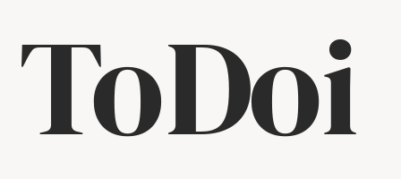
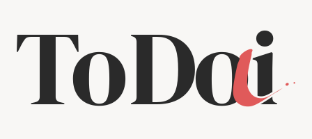
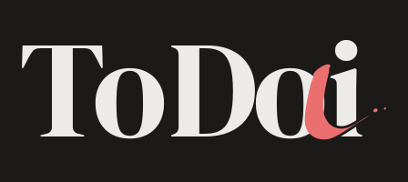
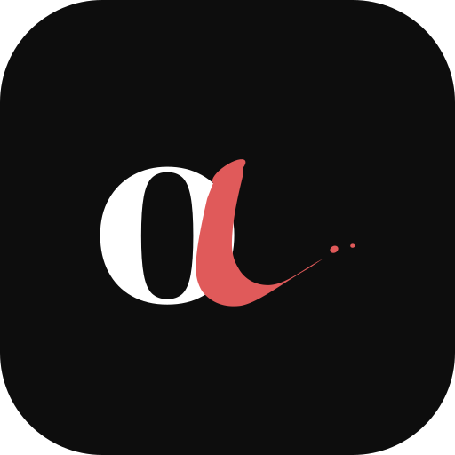
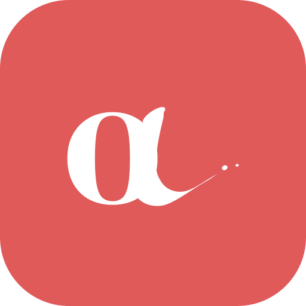
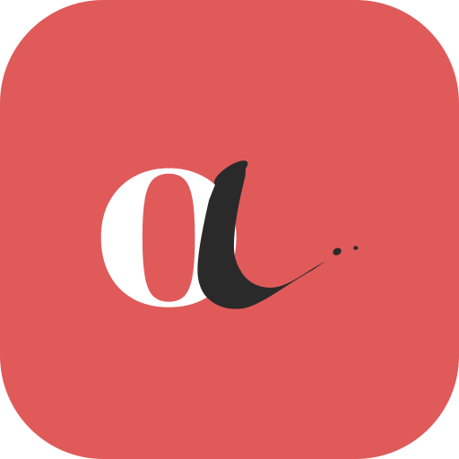
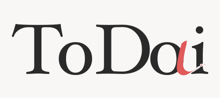
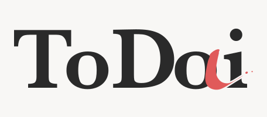
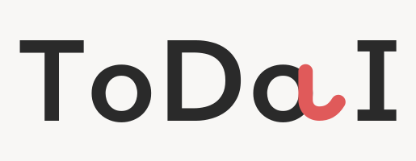

ToDoi
To do + Today + i de inteligencia. La segunda «o» se vuelve «a» con un solo trazo de pluma: sin él se lee ToDoi, con él ToDai, que en español suena casi como today. La «i» final es minúscula y su punto llega a la altura de la T y la D.
La lectura doble

sin el trazo: To Do i

con el trazo: To Da i (Today)
Serif con las parejas To y Do apretadas: la «o» queda metida bajo el brazo de la T y la D casi toca a la «o». La «a» es cursiva y está escrita con pluma de punta ancha: la plumilla, inclinada a 34°, deja la bajada con el grosor de la asta de la fuente, afina la curva y termina la salida casi en un pelo, con dos gotas pequeñas que salta la pluma al levantarse.
Marca, claro y oscuro

Ícono de la app

oficial
todo blanco
trazo en tintaOtras fuentes

Hoefler Text

Baskerville SemiBold

Avenir Next (la versión sans anterior)
DM Serif Display es la principal: serif de alto contraste y licencia libre (OFL), así que sirve también si la app se vende. Hoefler Text y Baskerville son fuentes de macOS: más clásicas, pero con licencia propietaria (para un logo comercial habría que comprarla).